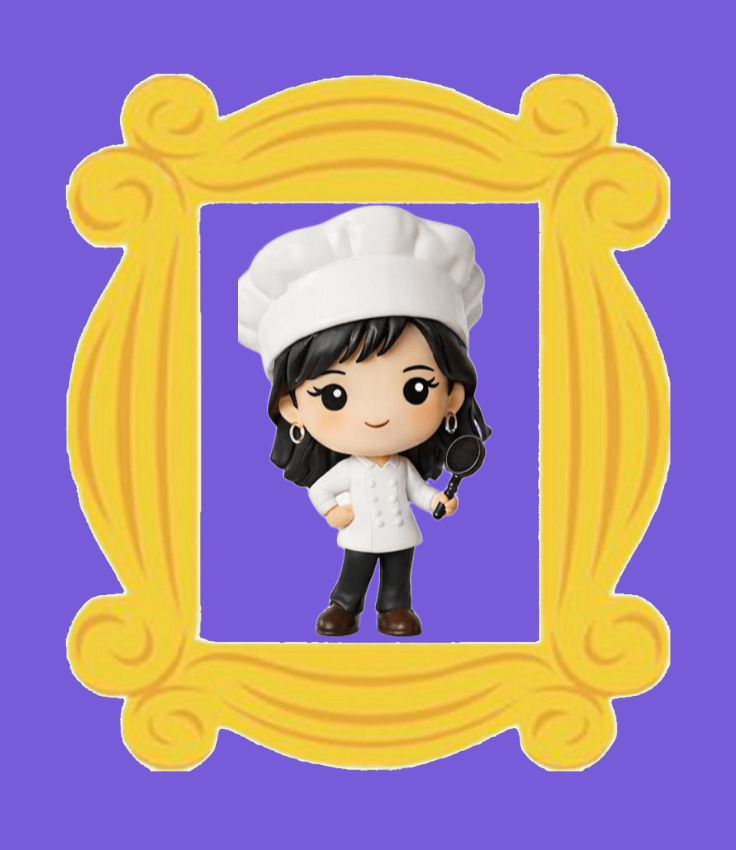
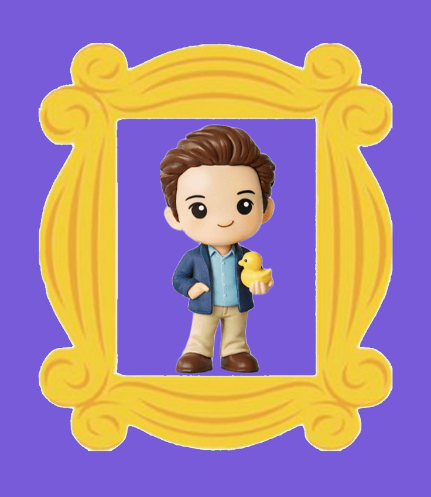
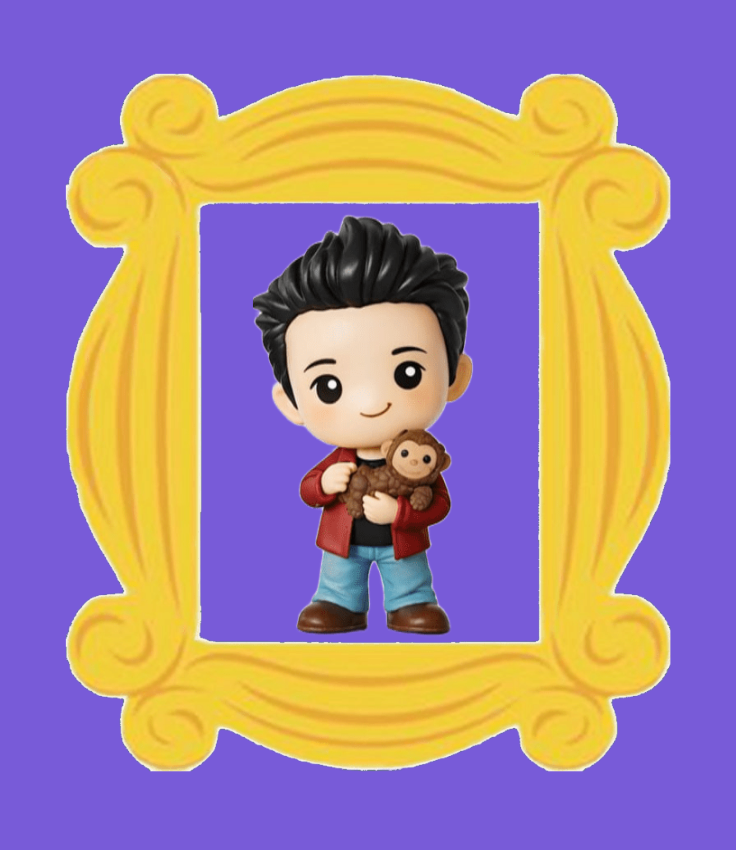
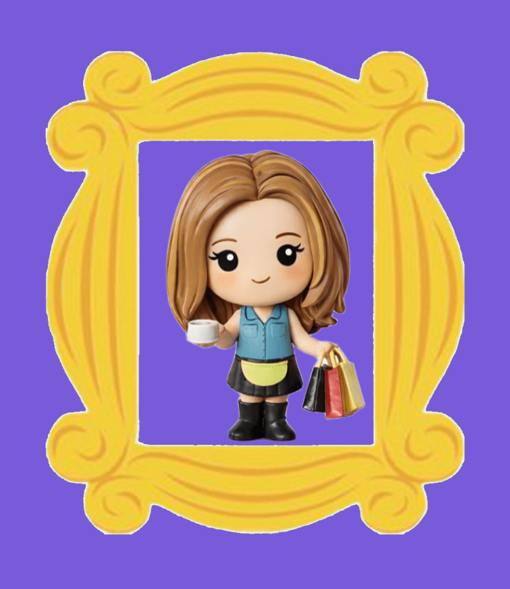

Phoebe Buffay

Joey Tribbiani

Chandler Bing

Ross Geller

Rachel Green
Friends é uma série produzida pela NBC entre 1994 e 2004, criada por David Crane e Marta Kauffman. É considerada uma das sitcoms mais influentes da história da televisão. A série acompanha o cotidiano de seis amigos Rachel, Monica, Phoebe, Joey, Chandler e Ross enquanto enfrentam os desafios da vida adulta em Nova York. A narrativa aborda temas como carreira, relacionamentos, amadurecimento e o valor da amizade. Dois cenários marcantes são o Central Perk, a cafeteria onde o grupo passa grande parte do tempo, e o apartamento da Monica, que transmite uma forte sensação de acolhimento e “casa”.
A série Friends acompanha a vida de seis amigos que vivem em Nova York e enfrentam juntos os desafios da vida adulta. Mais do que uma simples comédia, a história mostra o crescimento pessoal, emocional e profissional de cada personagem ao longo de dez anos, transformando o grupo em uma espécie de “família escolhida”. Tudo começa quando Rachel Green decide abandonar uma vida confortável e fugir do próprio casamento, buscando independência. Ela passa a morar com Monica Geller, sua amiga de infância, e se integra ao grupo formado também por Ross Geller, Chandler Bing, Joey Tribbiani e Phoebe Buffay. A partir daí, a convivência entre eles se torna constante, principalmente no café Central Perk, onde compartilham momentos do dia a dia, conquistas, frustrações e sonhos.
Ao longo da série, cada personagem passa por um processo de amadurecimento. Rachel evolui de uma jovem dependente para uma mulher independente e bem-sucedida. Ross enfrenta inseguranças e relacionamentos complicados, especialmente por seu amor duradouro por Rachel. Monica lida com seu perfeccionismo e encontra estabilidade tanto na carreira quanto na vida amorosa. Chandler, que usa o humor como mecanismo de defesa, aprende a se abrir emocionalmente. Joey busca sucesso como ator, representando a persistência diante das dificuldades, enquanto Phoebe, com sua personalidade excêntrica, revela uma história de vida difícil, mas marcada por resiliência. A série também explora temas universais como amizade, amor, carreira, insegurança e o medo de não corresponder às expectativas da vida adulta. Um dos principais fios condutores é o relacionamento entre Rachel e Ross, que passa por diversas fases, mostrando que o amor nem sempre segue um caminho simples ou linear.
Nos momentos finais, a história destaca que a vida está em constante mudança. Os personagens começam a seguir caminhos diferentes, assumindo novas responsabilidades e encerrando um ciclo importante de suas vidas. Ainda assim, o laço entre eles permanece forte, reforçando a ideia de que amizades verdadeiras continuam mesmo com o passar do tempo. Assim, Friends se destaca não apenas pelo humor, mas por retratar de forma sensível e realista a transição para a vida adulta e a importância das conexões humanas ao longo dessa jornada.